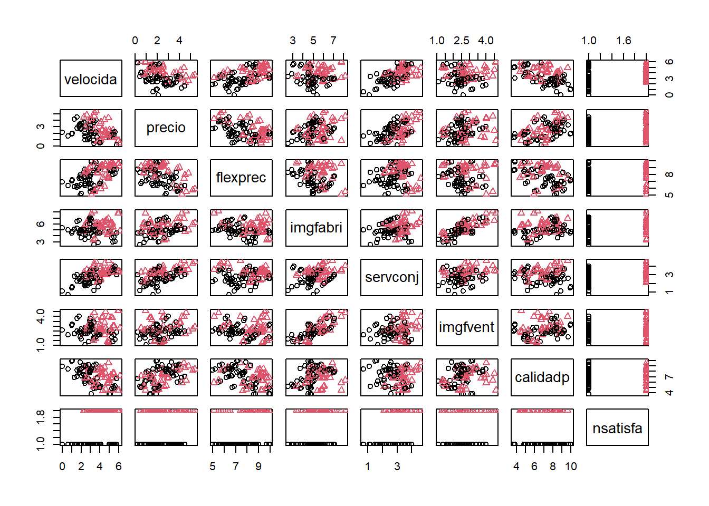

Capítulo 9 Modelos lineales generalizados
Los modelos lineales generalizados son una extensión de los modelos lineales para el caso de que la distribución condicional de la variable respuesta no sea normal (por ejemplo discreta: Bernouilli, Binomial, Poisson, …)
En los modelo lineales se supone que: \[E( Y | \mathbf{X} ) = \beta_{0}+\beta_{1}X_{1}+\beta_{2}X_{2}+\cdots+\beta_{p}X_{p}\] En los modelos lineales generalizados se introduce una función invertible g, denominada función enlace (o link): \[g\left(E(Y | \mathbf{X} )\right) = \beta_{0}+\beta_{1}X_{1}+\beta_{2}X_{2}+\cdots+\beta_{p}X_{p}\]
9.1 Ajuste: función glm
Para el ajuste (estimación de los parámetros) de un modelo lineal generalizado a un conjunto de datos (por máxima verosimilitud) se emplea la función glm:
ajuste <- glm(formula, family = gaussian, datos, ...)El parámetro family indica la distribución y el link. Por ejemplo:
gaussian(link = "identity"),gaussian(link = "log")binomial(link = "logit"),binomial(link = "probit")poisson(link = "log")Gamma(link = "inverse")
Para cada distribución se toma por defecto una función link (mostrada en primer lugar; ver help(family) para más detalles).
Muchas de las herramientas y funciones genéricas disponibles para los modelos lineales son válidas
también para este tipo de modelos: summary, coef, confint, predict, anova, ….
Veremos con más detalle el caso particular de la regresión logística.
9.2 Regresión logística
9.2.1 Ejemplo
Como ejemplo emplearemos los datos de clientes de la compañía de distribución industrial (Compañía Hair, Anderson y Tatham).
load("datos/hatco.RData")
as.data.frame(attr(hatco, "variable.labels"))## attr(hatco, "variable.labels")
## empresa Empresa
## tamano Tamaño de la empresa
## adquisic Estructura de adquisición
## tindustr Tipo de industria
## tsitcomp Tipo de situación de compra
## velocida Velocidad de entrega
## precio Nivel de precios
## flexprec Flexibilidad de precios
## imgfabri Imagen del fabricante
## servconj Servicio conjunto
## imgfvent Imagen de fuerza de ventas
## calidadp Calidad de producto
## fidelida Porcentaje de compra a HATCO
## satisfac Satisfacción global
## nfidelid Nivel de compra a HATCO
## nsatisfa Nivel de satisfacciónConsideraremos como respuesta la variable nsatisfa y como variables explicativas el resto de variables continuas menos fidelida y satisfac. Eliminamos también la última fila por tener datos faltantes (realmente no sería necesario).
datos <- hatco[-100, c(6:12, 16)]
plot(datos, pch = as.numeric(datos$nsatisfa), col = as.numeric(datos$nsatisfa))
9.2.2 Ajuste de un modelo de regresión logística
Se emplea la función glm seleccionando family = binomial (la función de enlace por defecto será logit):
modelo <- glm(nsatisfa ~ velocida + imgfabri , family = binomial, data = datos)
modelo##
## Call: glm(formula = nsatisfa ~ velocida + imgfabri, family = binomial,
## data = datos)
##
## Coefficients:
## (Intercept) velocida imgfabri
## -10.127 1.203 1.058
##
## Degrees of Freedom: 98 Total (i.e. Null); 96 Residual
## Null Deviance: 136.4
## Residual Deviance: 88.64 AIC: 94.64La razón de ventajas (OR) permite cuantificar el efecto de las variables explicativas en la respuesta (Incremento proporcional en la ventaja o probabilidad de éxito, al aumentar una unidad la variable manteniendo las demás fijas):
exp(coef(modelo)) # Razones de ventajas ("odds ratios")## (Intercept) velocida imgfabri
## 3.997092e-05 3.329631e+00 2.881619e+00exp(confint(modelo))## Waiting for profiling to be done...## 2.5 % 97.5 %
## (Intercept) 3.828431e-07 0.001621259
## velocida 2.061302e+00 5.976208357
## imgfabri 1.737500e+00 5.247303813Para obtener un resumen más completo del ajuste también se utiliza summary()
summary(modelo)##
## Call:
## glm(formula = nsatisfa ~ velocida + imgfabri, family = binomial,
## data = datos)
##
## Deviance Residuals:
## Min 1Q Median 3Q Max
## -1.8941 -0.6697 -0.2098 0.7865 2.3378
##
## Coefficients:
## Estimate Std. Error z value Pr(>|z|)
## (Intercept) -10.1274 2.1062 -4.808 1.52e-06 ***
## velocida 1.2029 0.2685 4.479 7.49e-06 ***
## imgfabri 1.0584 0.2792 3.790 0.000151 ***
## ---
## Signif. codes: 0 '***' 0.001 '**' 0.01 '*' 0.05 '.' 0.1 ' ' 1
##
## (Dispersion parameter for binomial family taken to be 1)
##
## Null deviance: 136.42 on 98 degrees of freedom
## Residual deviance: 88.64 on 96 degrees of freedom
## AIC: 94.64
##
## Number of Fisher Scoring iterations: 5La desvianza (deviance) es una medida de la bondad del ajuste de un modelo lineal generalizado (sería equivalente a la suma de cuadrados residual de un modelo lineal; valores más altos indican peor ajuste). La Null deviance se correspondería con un modelo solo con la constante y la Residual deviance con el modelo ajustado. En este caso hay una reducción de 47.78 con una pérdida de 2 grados de libertad (una reducción significativa).
Para contrastar globalmente el efecto de las covariables también podemos emplear:
modelo.null <- glm(nsatisfa ~ 1, binomial, datos)
anova(modelo.null, modelo, test = "Chi")## Analysis of Deviance Table
##
## Model 1: nsatisfa ~ 1
## Model 2: nsatisfa ~ velocida + imgfabri
## Resid. Df Resid. Dev Df Deviance Pr(>Chi)
## 1 98 136.42
## 2 96 88.64 2 47.783 4.207e-11 ***
## ---
## Signif. codes: 0 '***' 0.001 '**' 0.01 '*' 0.05 '.' 0.1 ' ' 19.3 Predicción
Las predicciones se obtienen también con la función predict:
p.est <- predict(modelo, type = "response")El parámetro type = "response" permite calcular las probabilidades estimadas de la segunda categoría.
Podríamos obtener una tabla de clasificación:
cat.est <- as.numeric(p.est > 0.5)
tabla <- table(datos$nsatisfa, cat.est)
tabla## cat.est
## 0 1
## bajo 44 10
## alto 7 38print(100*prop.table(tabla), digits = 2)## cat.est
## 0 1
## bajo 44.4 10.1
## alto 7.1 38.4Por defecto predict obtiene las predicciones correspondientes a las observaciones (modelo$fitted.values). Para otros casos hay que emplear el argumento newdata.
9.4 Selección de variables explicativas
El objetivo sería conseguir un buen ajuste con el menor número de variables explicativas posible.
Para actualizar un modelo (p.e. eliminando o añadiendo variables) se puede emplear la función update:
modelo.completo <- glm(nsatisfa ~ . , family = binomial, data = datos)
summary(modelo.completo)##
## Call:
## glm(formula = nsatisfa ~ ., family = binomial, data = datos)
##
## Deviance Residuals:
## Min 1Q Median 3Q Max
## -2.01370 -0.31260 -0.02826 0.35423 1.74741
##
## Coefficients:
## Estimate Std. Error z value Pr(>|z|)
## (Intercept) -32.6317 7.7121 -4.231 2.32e-05 ***
## velocida 3.9980 2.3362 1.711 0.087019 .
## precio 3.6042 2.3184 1.555 0.120044
## flexprec 1.5769 0.4433 3.557 0.000375 ***
## imgfabri 2.1669 0.6857 3.160 0.001576 **
## servconj -4.2655 4.3526 -0.980 0.327096
## imgfvent -1.1496 0.8937 -1.286 0.198318
## calidadp 0.1506 0.2495 0.604 0.546147
## ---
## Signif. codes: 0 '***' 0.001 '**' 0.01 '*' 0.05 '.' 0.1 ' ' 1
##
## (Dispersion parameter for binomial family taken to be 1)
##
## Null deviance: 136.424 on 98 degrees of freedom
## Residual deviance: 60.807 on 91 degrees of freedom
## AIC: 76.807
##
## Number of Fisher Scoring iterations: 7modelo.reducido <- update(modelo.completo, . ~ . - calidadp)
summary(modelo.reducido)##
## Call:
## glm(formula = nsatisfa ~ velocida + precio + flexprec + imgfabri +
## servconj + imgfvent, family = binomial, data = datos)
##
## Deviance Residuals:
## Min 1Q Median 3Q Max
## -2.0920 -0.3518 -0.0280 0.3876 1.7885
##
## Coefficients:
## Estimate Std. Error z value Pr(>|z|)
## (Intercept) -31.6022 7.3962 -4.273 1.93e-05 ***
## velocida 4.1831 2.2077 1.895 0.058121 .
## precio 3.8872 2.1685 1.793 0.073044 .
## flexprec 1.5452 0.4361 3.543 0.000396 ***
## imgfabri 2.1984 0.6746 3.259 0.001119 **
## servconj -4.6985 4.0597 -1.157 0.247125
## imgfvent -1.1387 0.8784 -1.296 0.194849
## ---
## Signif. codes: 0 '***' 0.001 '**' 0.01 '*' 0.05 '.' 0.1 ' ' 1
##
## (Dispersion parameter for binomial family taken to be 1)
##
## Null deviance: 136.424 on 98 degrees of freedom
## Residual deviance: 61.171 on 92 degrees of freedom
## AIC: 75.171
##
## Number of Fisher Scoring iterations: 7Para obtener el modelo “óptimo” lo ideal sería evaluar todos los modelos posibles.
En este caso no se puede emplear la función regsubsets del paquete leaps (sólo para modelos lineales),
pero por ejemplo el paquete
bestglm
proporciona una herramienta equivalente (bestglm()).
9.4.1 Selección por pasos
La función stepwise del paquete RcmdrMisc (interfaz de stepAIC del paquete MASS)
permite seleccionar el modelo por pasos según criterio AIC o BIC:
library(MASS)
library(RcmdrMisc)## Warning: package 'RcmdrMisc' was built under R version 4.1.1modelo <- stepwise(modelo.completo, direction='backward/forward', criterion='BIC')##
## Direction: backward/forward
## Criterion: BIC
##
## Start: AIC=97.57
## nsatisfa ~ velocida + precio + flexprec + imgfabri + servconj +
## imgfvent + calidadp
##
## Df Deviance AIC
## - calidadp 1 61.171 93.337
## - servconj 1 61.565 93.730
## - imgfvent 1 62.668 94.834
## - precio 1 62.712 94.878
## - velocida 1 63.105 95.271
## <none> 60.807 97.568
## - imgfabri 1 76.251 108.416
## - flexprec 1 82.443 114.609
##
## Step: AIC=93.34
## nsatisfa ~ velocida + precio + flexprec + imgfabri + servconj +
## imgfvent
##
## Df Deviance AIC
## - servconj 1 62.205 89.776
## - imgfvent 1 63.055 90.625
## - precio 1 63.698 91.269
## - velocida 1 63.983 91.554
## <none> 61.171 93.337
## + calidadp 1 60.807 97.568
## - imgfabri 1 77.823 105.394
## - flexprec 1 82.461 110.032
##
## Step: AIC=89.78
## nsatisfa ~ velocida + precio + flexprec + imgfabri + imgfvent
##
## Df Deviance AIC
## - imgfvent 1 64.646 87.622
## <none> 62.205 89.776
## + servconj 1 61.171 93.337
## + calidadp 1 61.565 93.730
## - imgfabri 1 78.425 101.401
## - precio 1 79.699 102.675
## - flexprec 1 82.978 105.954
## - velocida 1 88.731 111.706
##
## Step: AIC=87.62
## nsatisfa ~ velocida + precio + flexprec + imgfabri
##
## Df Deviance AIC
## <none> 64.646 87.622
## + imgfvent 1 62.205 89.776
## + servconj 1 63.055 90.625
## + calidadp 1 63.890 91.460
## - precio 1 80.474 98.854
## - flexprec 1 83.663 102.044
## - imgfabri 1 85.208 103.588
## - velocida 1 89.641 108.021summary(modelo)##
## Call:
## glm(formula = nsatisfa ~ velocida + precio + flexprec + imgfabri,
## family = binomial, data = datos)
##
## Deviance Residuals:
## Min 1Q Median 3Q Max
## -1.99422 -0.36209 -0.03932 0.44249 1.80432
##
## Coefficients:
## Estimate Std. Error z value Pr(>|z|)
## (Intercept) -28.0825 6.4767 -4.336 1.45e-05 ***
## velocida 1.6268 0.4268 3.812 0.000138 ***
## precio 1.3749 0.4231 3.250 0.001155 **
## flexprec 1.3364 0.3785 3.530 0.000415 ***
## imgfabri 1.5168 0.4252 3.567 0.000361 ***
## ---
## Signif. codes: 0 '***' 0.001 '**' 0.01 '*' 0.05 '.' 0.1 ' ' 1
##
## (Dispersion parameter for binomial family taken to be 1)
##
## Null deviance: 136.424 on 98 degrees of freedom
## Residual deviance: 64.646 on 94 degrees of freedom
## AIC: 74.646
##
## Number of Fisher Scoring iterations: 69.5 Diagnosis del modelo
9.5.1 Gráficas básicas de diagnóstico
Con la función plot se pueden generar gráficos de interés para la diagnosis del modelo:
oldpar <- par( mfrow=c(2,2))
plot(modelo)
par(oldpar)Aunque su interpretación difiere un poco de la de los modelos lineales…
9.5.2 Gráficos parciales de residuos
Se pueden generar gráficos parciales de residuos (p.e. crPlots() del paquete car):
# library(car)
crPlots(modelo)
9.5.3 Estadísticos
Se pueden emplear las mismas funciones vistas en los modelos lineales para obtener medidas de diagnosis de interés (ver help(influence.measures)). Por ejemplo:
residuals(model, type = "deviance") proporciona los residuos deviance.
En general, muchas de las herramientas para modelos lineales son también válidas para estos modelos. Por ejemplo:
# library(car)
vif(modelo)## velocida precio flexprec imgfabri
## 2.088609 2.653934 2.520042 1.9304099.6 Alternativas
Además de considerar ajustes polinómicos, pueden ser de interés emplear métodos no paramétricos. Por ejemplo, puede ser recomendable la función gam del paquete mgcv.